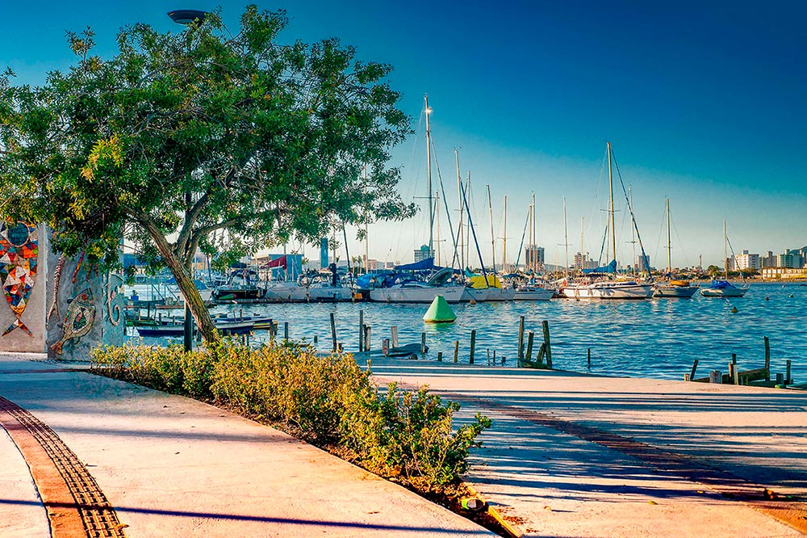

Passear na Avenida Beira Rio!
Um dos principais centros de entretenimento esportivo da cidade, a avenida Beira Rio possui: campo de areia, barras para treino de calistenia, quadra de futsal e basquete, ciclovia e etc. Há também diversos estabelecimentos de alimentação, e o mais procurado é o famoso pastelzinho com caldo de cana (kk).
A Beira Rio sempre é assunto. Saiba as principais notícias a respeito da avenida no google.